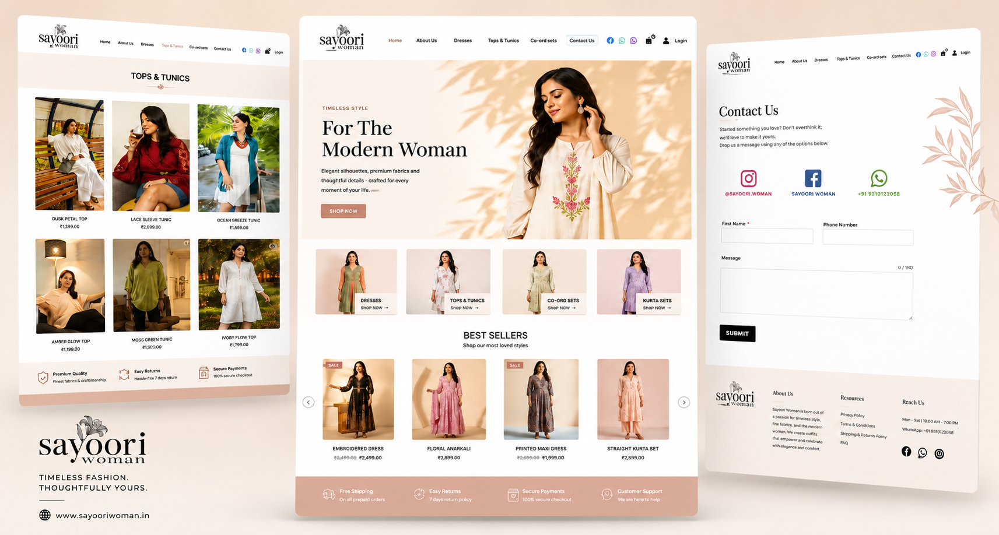

Sayoori Woman is a modern online fashion destination offering stylish women's clothing, trendy outfits, and contemporary fashion collections. Infotive Solutions designed and developed a visually elegant, high-performance e-commerce website that reflects the brand's unique identity while delivering a seamless shopping experience across all devices.
Project:
Sayoori Woman
Timeline:
Ongoing
Scope:
Custom E-Commerce Website Design & Development, Responsive UI/UX Design, Product Catalog Management, Fashion Collection Pages, Shopping Cart & Checkout Experience, Custom CMS Implementation, Performance & SEO Optimization, Cross-Browser Compatibility, Mobile-First Development, Customer Inquiry & Contact Forms, Ongoing Maintenance & Support.

Sayoori Woman needed a modern fashion e-commerce platform that could showcase its latest collections while delivering a seamless and engaging shopping experience. The challenge was to create a visually elegant website that reflects the brand's identity, simplifies product discovery, and encourages customers to browse, shop, and return with confidence.
By combining elegant UI/UX design, scalable e-commerce development, and performance-driven optimization, Infotive Solutions delivered a future-ready fashion platform that enhances Sayoori Woman's online presence, elevates customer engagement, and supports sustainable business growth in the competitive fashion industry.
At Infotive Solutions, we partnered with Sayoori Woman to build a modern fashion e-commerce platform that blends elegant design with high-performance development. Our approach focused on creating an engaging shopping experience, intuitive product discovery, and scalable technology that helps the brand grow while delivering a seamless customer journey across every device.
By combining elegant UI/UX design, scalable e-commerce development, and performance-driven optimization, Infotive Solutions delivered a future-ready fashion platform that empowers Sayoori Woman to strengthen its online presence, showcase its latest collections, and deliver an exceptional shopping experience that drives long-term customer loyalty and business growth.
The Sayoori Woman project demonstrates Infotive Solutions' expertise in building high-performing fashion e-commerce websites that combine elegant design, scalable development, and conversion-focused user experiences. By blending modern UI/UX with performance optimization and flexible content management, we created a platform that empowers the brand to showcase its collections, attract new customers, and confidently scale its online fashion business in a competitive digital marketplace.